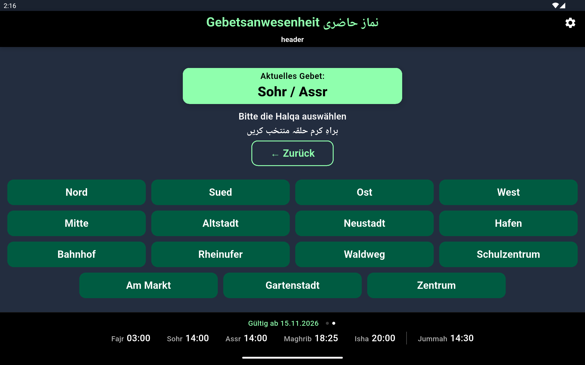
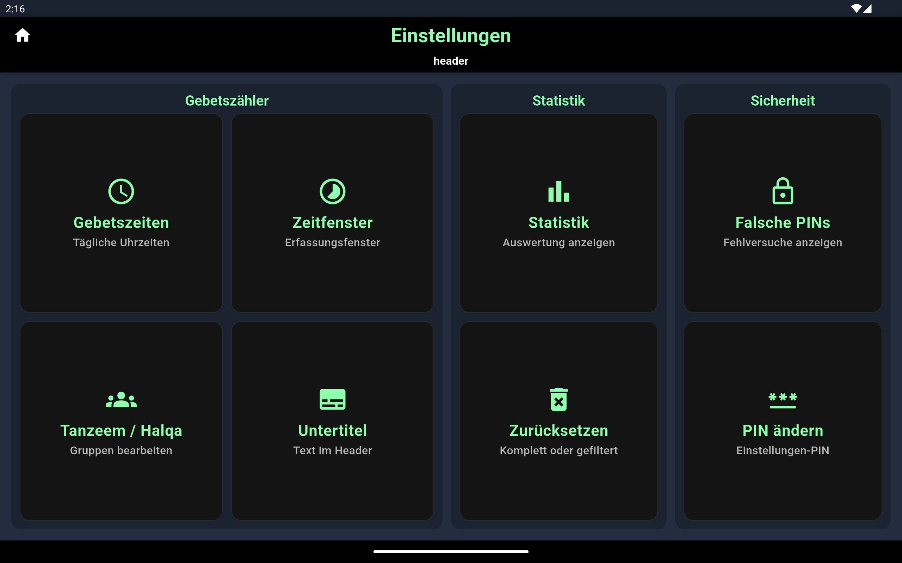
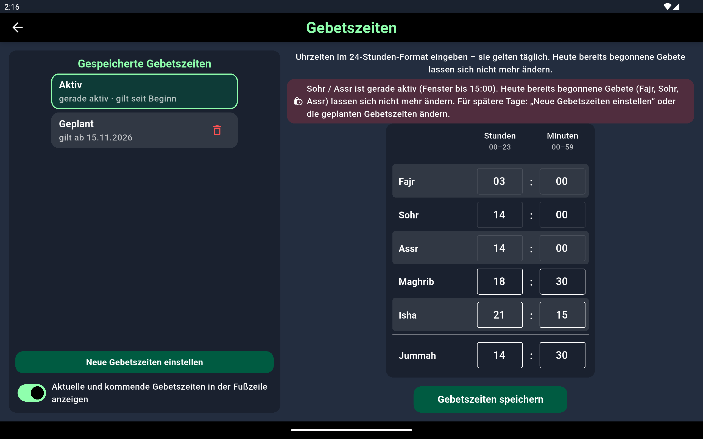
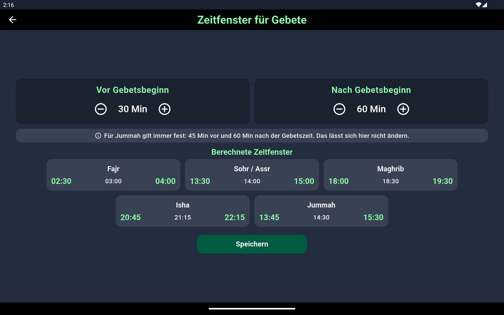
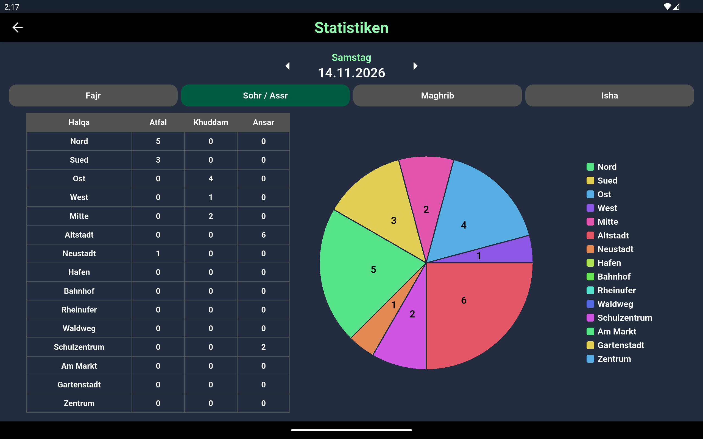

Eine Offline-App für Android-Tablets: Besucher tippen Tanzeem und Halqa an, die App zählt für das aktuelle Gebet. Ohne Konto, ohne Internet, alle Daten bleiben auf dem Gerät.
APK herunterladen So startet manGebaut für den Einsatz an der Tür: große Tasten, kein Scrollen, alles auf einen Blick.
Aktuelles Gebet oben, darunter Tanzeem und dann Halqa wählen. Das Gebet erkennt die App selbst anhand der Uhrzeit.
Mehrere Sätze von Gebetszeiten, jeweils „gültig ab“ einem Datum. Laufende, geplante und beendete Sätze sind getrennt.
Freitags ersetzt Jummah das Sohr-Gebet. Das Erfassungsfenster ist fest 45 Min davor und 60 Min danach.
Reihenfolge der Gebete, überlappende Fenster und doppelte Gruppennamen werden vor dem Speichern abgefangen.
Tabelle und Kreisdiagramm je Gebet, mit Wochentag. Gebete lassen sich gezielt oder komplett zurücksetzen.
Einstellungen nur mit eigener PIN. Falsche Eingaben werden mit Zeitpunkt festgehalten, nach 10 Fehlversuchen gibt es eine kurze Sperre.
Aktuelle und kommende Zeiten wechseln alle 10 Sekunden, mit „Gültig bis/ab“. Lässt sich abschalten.
Keine Cloud, keine Konten, keine Werbung. Gespeichert wird lokal auf dem Tablet.
Aufnahmen vom Android-Tablet (Querformat).





Zum Selbstbauen: flutter pub get und flutter run, Details im README.